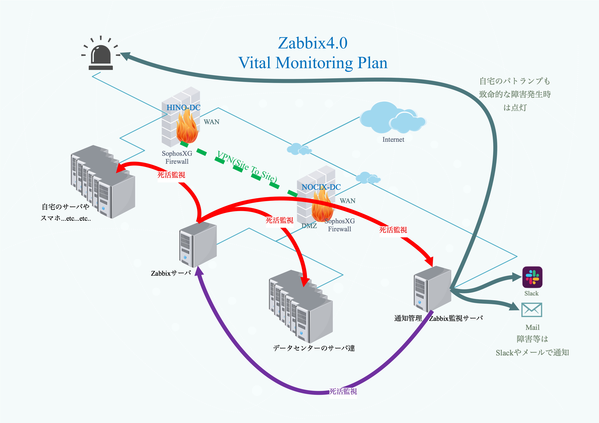

監視サーバ(Zabbix)
監視設計概要

監視サーバはNOCIX拠点に借りている専用サーバから、自宅に設置している環境及び、自宅のWIFIに接続可能かつPINGに応答するすべてのデジタル機器の死活監視を行う。
死活監視には、Zabbix4.0を利用し、各種通知の管理及び監視サーバの死活監視を行うシステムを別途自作する。
また、障害発生時や数日以内に障害に繋がる兆候があった場合は、自宅のデスク上に設置したパトランプを赤色で点滅させる。
仮想マシン設定情報
| 項目 |
設定値 |
| 仮想マシン名 |
[MAIN]monkey2018.k636174.net |
| インストールOS |
Debian GNU/Linux 9.5 (stretch) |
| コア数 |
4コア |
| メモリ |
2046MB |
| アタッチネットワーク |
DMZ |
| アタッチネットワーク2 |
LAN |
| ディスク |
500GB(スパース) |
| 主な用途 |
ZabbixServer,SyslogServer |
OS設定値
| 項目 |
設定値 |
| ホスト名 |
monkey2018.k636174.net |
| IPアドレス |
172.16.16.105 |
Cron設定状況
稼働サービス
| サービス名 |
バージョン |
自動起動 |
| SSH |
7.4p1 |
yes |
| rsyslogd |
8.24.0 |
yes |
| zabbix_server |
4.0.0 |
yes |
| zabbix_agent |
4.0.0 |
yes |
ZabbixServer設定
アクション
| 設定値 |
項目 |
| Name |
[MASTER]ZabbixCollector |
| 実行条件 |
ラベル：A 名前： トリガーの深刻度 以上 未分類 |
| 有効 |
Checked |
| デフォルトのアクション実行ステップの間隔 |
5m |
| ステップ |
1-0(無限) |
| コマンド |
curl -F "hostname={HOST.NAME}" -F "ip={HOST.IP}" -F "status={EVENT.STATUS} " -F "trigger_name={EVENT.NAME}" -F "trigger_severity={EVENT.SEVERITY}" -F "item_key={ITEM.KEY}" -F "item_val={ITEM.VALUE}" -F "event_id={EVENT.ID}" -F "torigger_url={TRIGGER.URL}" http://172.16.16.99/zabbix-collector/api/alerts |